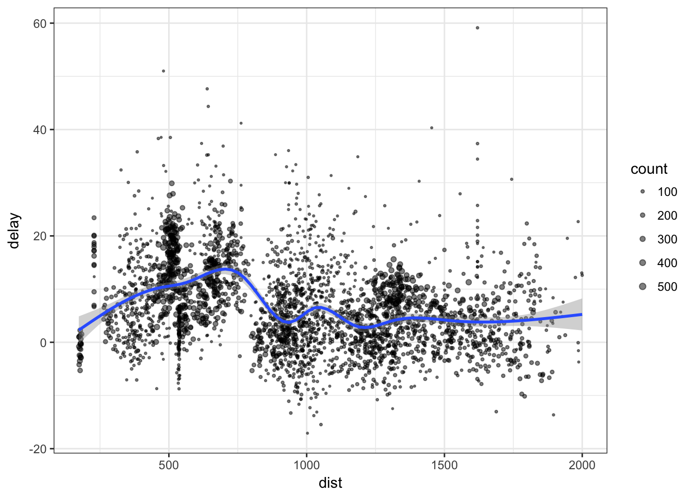
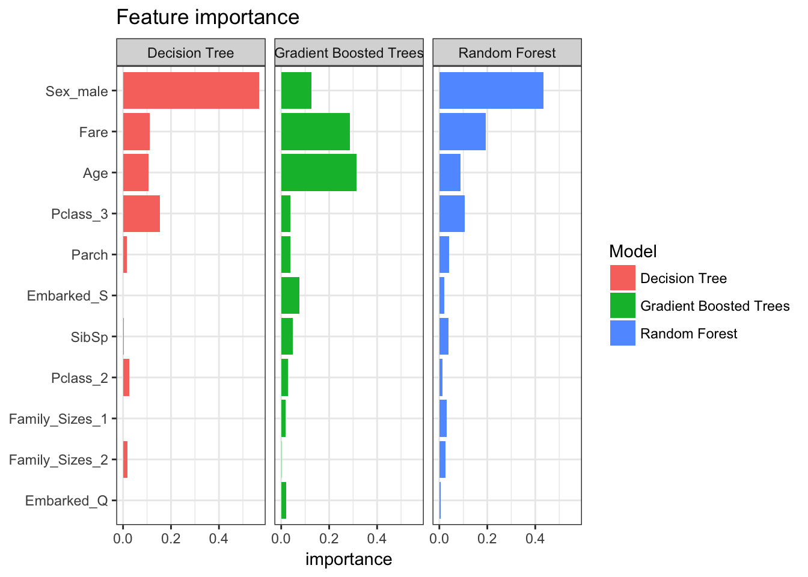
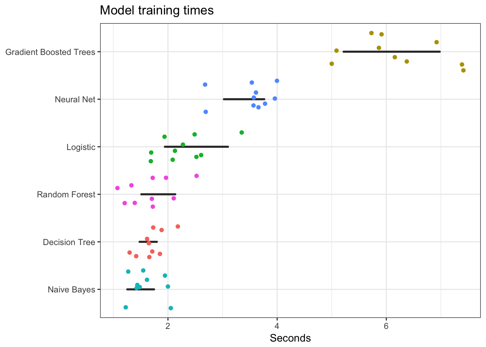
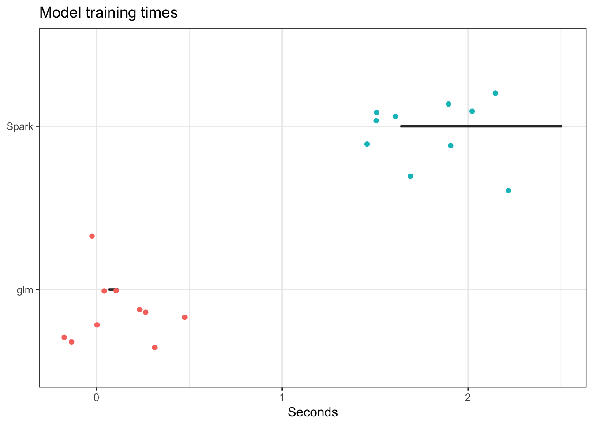

This content is from the fall 2016 version of this course. Please go here for the most recent version.
Getting data from the web: scraping
library(tidyverse)
library(gapminder)
library(stringr)
theme_set(theme_bw())Objectives
- Illustrate the split-apply-combine analytical pattern
- Define parallel processing
- Introduce Hadoop and Spark as distributed computing platforms
- Introduce the
sparklyrpackage - Demonstrate how to use
sparklyrfor machine learning using the Titanic data set
Split-apply-combine
A common analytical pattern is to
- split data into pieces,
- apply some function to each piece,
- combine the results back together again.
Examples of methods you have employed thus far using the gapminder dataset:
dplyr::group_by()
gapminder %>%
group_by(continent) %>%
summarize(n = n())## # A tibble: 5 × 2
## continent n
## <fctr> <int>
## 1 Africa 624
## 2 Americas 300
## 3 Asia 396
## 4 Europe 360
## 5 Oceania 24gapminder %>%
group_by(continent) %>%
summarize(avg_lifeExp = mean(lifeExp))## # A tibble: 5 × 2
## continent avg_lifeExp
## <fctr> <dbl>
## 1 Africa 48.86533
## 2 Americas 64.65874
## 3 Asia 60.06490
## 4 Europe 71.90369
## 5 Oceania 74.32621for loops
countries <- unique(gapminder$country)
lifeExp_models <- vector("list", length(countries))
names(lifeExp_models) <- countries
for(i in seq_along(countries)){
lifeExp_models[[i]] <- lm(lifeExp ~ year, data = filter(gapminder,
country == countries[[i]]))
}
head(lifeExp_models)## $Afghanistan
##
## Call:
## lm(formula = lifeExp ~ year, data = filter(gapminder, country ==
## countries[[i]]))
##
## Coefficients:
## (Intercept) year
## -507.5343 0.2753
##
##
## $Albania
##
## Call:
## lm(formula = lifeExp ~ year, data = filter(gapminder, country ==
## countries[[i]]))
##
## Coefficients:
## (Intercept) year
## -594.0725 0.3347
##
##
## $Algeria
##
## Call:
## lm(formula = lifeExp ~ year, data = filter(gapminder, country ==
## countries[[i]]))
##
## Coefficients:
## (Intercept) year
## -1067.8590 0.5693
##
##
## $Angola
##
## Call:
## lm(formula = lifeExp ~ year, data = filter(gapminder, country ==
## countries[[i]]))
##
## Coefficients:
## (Intercept) year
## -376.5048 0.2093
##
##
## $Argentina
##
## Call:
## lm(formula = lifeExp ~ year, data = filter(gapminder, country ==
## countries[[i]]))
##
## Coefficients:
## (Intercept) year
## -389.6063 0.2317
##
##
## $Australia
##
## Call:
## lm(formula = lifeExp ~ year, data = filter(gapminder, country ==
## countries[[i]]))
##
## Coefficients:
## (Intercept) year
## -376.1163 0.2277nest() and map()
# function to estimate linear model for gapminder subsets
le_vs_yr <- function(df) {
lm(lifeExp ~ year, data = df)
}
# split data into nests
(gap_nested <- gapminder %>%
group_by(continent, country) %>%
nest())## # A tibble: 142 × 3
## continent country data
## <fctr> <fctr> <list>
## 1 Asia Afghanistan <tibble [12 × 4]>
## 2 Europe Albania <tibble [12 × 4]>
## 3 Africa Algeria <tibble [12 × 4]>
## 4 Africa Angola <tibble [12 × 4]>
## 5 Americas Argentina <tibble [12 × 4]>
## 6 Oceania Australia <tibble [12 × 4]>
## 7 Europe Austria <tibble [12 × 4]>
## 8 Asia Bahrain <tibble [12 × 4]>
## 9 Asia Bangladesh <tibble [12 × 4]>
## 10 Europe Belgium <tibble [12 × 4]>
## # ... with 132 more rows# apply a linear model to each nested data frame
(gap_nested <- gap_nested %>%
mutate(fit = map(data, le_vs_yr)))## # A tibble: 142 × 4
## continent country data fit
## <fctr> <fctr> <list> <list>
## 1 Asia Afghanistan <tibble [12 × 4]> <S3: lm>
## 2 Europe Albania <tibble [12 × 4]> <S3: lm>
## 3 Africa Algeria <tibble [12 × 4]> <S3: lm>
## 4 Africa Angola <tibble [12 × 4]> <S3: lm>
## 5 Americas Argentina <tibble [12 × 4]> <S3: lm>
## 6 Oceania Australia <tibble [12 × 4]> <S3: lm>
## 7 Europe Austria <tibble [12 × 4]> <S3: lm>
## 8 Asia Bahrain <tibble [12 × 4]> <S3: lm>
## 9 Asia Bangladesh <tibble [12 × 4]> <S3: lm>
## 10 Europe Belgium <tibble [12 × 4]> <S3: lm>
## # ... with 132 more rows# combine the results back into a single data frame
library(broom)
(gap_nested <- gap_nested %>%
mutate(tidy = map(fit, tidy)))## # A tibble: 142 × 5
## continent country data fit tidy
## <fctr> <fctr> <list> <list> <list>
## 1 Asia Afghanistan <tibble [12 × 4]> <S3: lm> <data.frame [2 × 5]>
## 2 Europe Albania <tibble [12 × 4]> <S3: lm> <data.frame [2 × 5]>
## 3 Africa Algeria <tibble [12 × 4]> <S3: lm> <data.frame [2 × 5]>
## 4 Africa Angola <tibble [12 × 4]> <S3: lm> <data.frame [2 × 5]>
## 5 Americas Argentina <tibble [12 × 4]> <S3: lm> <data.frame [2 × 5]>
## 6 Oceania Australia <tibble [12 × 4]> <S3: lm> <data.frame [2 × 5]>
## 7 Europe Austria <tibble [12 × 4]> <S3: lm> <data.frame [2 × 5]>
## 8 Asia Bahrain <tibble [12 × 4]> <S3: lm> <data.frame [2 × 5]>
## 9 Asia Bangladesh <tibble [12 × 4]> <S3: lm> <data.frame [2 × 5]>
## 10 Europe Belgium <tibble [12 × 4]> <S3: lm> <data.frame [2 × 5]>
## # ... with 132 more rows(gap_coefs <- gap_nested %>%
select(continent, country, tidy) %>%
unnest(tidy))## # A tibble: 284 × 7
## continent country term estimate std.error statistic
## <fctr> <fctr> <chr> <dbl> <dbl> <dbl>
## 1 Asia Afghanistan (Intercept) -507.5342716 40.484161954 -12.536613
## 2 Asia Afghanistan year 0.2753287 0.020450934 13.462890
## 3 Europe Albania (Intercept) -594.0725110 65.655359062 -9.048348
## 4 Europe Albania year 0.3346832 0.033166387 10.091036
## 5 Africa Algeria (Intercept) -1067.8590396 43.802200843 -24.379118
## 6 Africa Algeria year 0.5692797 0.022127070 25.727749
## 7 Africa Angola (Intercept) -376.5047531 46.583370599 -8.082385
## 8 Africa Angola year 0.2093399 0.023532003 8.895964
## 9 Americas Argentina (Intercept) -389.6063445 9.677729641 -40.258031
## 10 Americas Argentina year 0.2317084 0.004888791 47.395847
## # ... with 274 more rows, and 1 more variables: p.value <dbl>Parallel computing

Parallel computing (or processing) is a type of computation whereby many calculations or processes are carried out simultaneously.1 Rather than processing problems in serial (or sequential) order, the computer splits the task up into smaller parts that can be processed simultaneously using multiple processors. This is also called multithreading. By spliting the job up into simultaneous operations running in parallel, you complete your operation quicker, making the code more efficient.
Why use parallel computing
- Imitates real life
- In the real world, people use their brains to think in parallel - we multitask all the time without even thinking about it. Institutions are structured to process information in parallel, rather than in serial.
- More efficient (sometimes)
- Throw more resources at a problem will shorten it time to completion
- Tackle larger problems
- More resources helps solve a larger problem
- Use distributed resources
- Why spend thousands of dollars beefing up your own computing equipment when you can instead rent computing resources from Google or Amazon for mere pennies?
Why not to use parallel computing
- Limits to efficiency gains
- Amdahl’s law
- There are theoretical limits to how much you can speed up computations via parallel computing
- Diminishing returns over time
- Complexity
- Writing parallel code can be more complicated than serial code
- R does not natively implement parallel computing - you have to explicitly build it into your script
- Dependencies
- Your computation may rely on the output from the first set of tasks to perform the second tasks
- If you compute the problem in parallel fashion, the individual chunks do not communicate with one another
- Parallel slowdown
- Parallel computing speeds up computations at a price
- Once the problem is broken into separate threads, reading and writing data from the threads to memory or the hard drive takes time
- Some tasks are not improved by spliting the process into parallel operations
multidplyr
multidplyr is a work-in-progress package that implements parallel computing locally using dplyr. Rather than performing computations using a single core or processor, it spreads the computation across multiple cores. The basic sequence of steps is:
- Call
partition()to split the dataset across multiple cores. This makes a partitioned data frame, or aparty dffor short. - Each dplyr verb applied to a
party dfperforms the operation independently on each core. It leaves each result on each core, and returns anotherparty df. - When you’re done with the expensive operations that need to be done on each core, you call
collect()to retrieve the data and bring it back to you local computer.
nycflights13::flights
Install multidplyr if you don’t have it already.
devtools::install_github("hadley/multidplyr")library(multidplyr)
library(nycflights13)Next, partition the flights data by flight number, compute the average delay per flight, and then collect the results:
flights1 <- partition(flights, flight)
flights2 <- summarize(flights1, dep_delay = mean(dep_delay, na.rm = TRUE))
flights3 <- collect(flights2)The dplyr code looks the same as usual, but behind the scenes things are very different. flights1 and flights2 are party dfs. These look like normal data frames, but have an additional attribute: the number of shards. In this example, it tells us that flights2 is spread across three nodes, and the size on each node varies from 1275 to 1286 rows. partition() always makes sure a group is kept together on one node.
flights2## Source: party_df [3,844 x 2]
## Shards: 3 [1,251--1,316 rows]
##
## # S3: party_df
## flight dep_delay
## <int> <dbl>
## 1 3 3.665079
## 2 4 7.516624
## 3 5 4.425926
## 4 16 -0.250000
## 5 27 13.282658
## 6 28 13.600000
## 7 33 1.938235
## 8 34 6.597403
## 9 35 20.272727
## 10 37 30.500000
## # ... with 3,834 more rowsPerformance
For this size of data, using a local cluster actually makes performance slower.
system.time({
flights %>%
partition() %>%
summarise(mean(dep_delay, na.rm = TRUE)) %>%
collect()
})## user system elapsed
## 0.435 0.077 0.833system.time({
flights %>%
group_by() %>%
summarise(mean(dep_delay, na.rm = TRUE))
})## user system elapsed
## 0.006 0.001 0.006That’s because there’s some overhead associated with sending the data to each node and retrieving the results at the end. For basic dplyr verbs, multidplyr is unlikely to give you significant speed ups unless you have 10s or 100s of millions of data points. It might however, if you’re doing more complex things.
gapminder
Let’s now return to gapminder and estimate separate linear regression models of life expectancy based on year for each country. We will use multidplyr to split the work across multiple cores. Note that we need to use cluster_library() to load the purrr package on every node.
# split data into nests
gap_nested <- gapminder %>%
group_by(continent, country) %>%
nest()
# partition gap_nested across the cores
gap_nested_part <- gap_nested %>%
partition(country)
# apply a linear model to each nested data frame
cluster_library(gap_nested_part, "purrr")
system.time({
gap_nested_part %>%
mutate(fit = map(data, function(df) lm(lifeExp ~ year, data = df)))
})## user system elapsed
## 0.002 0.001 0.113Compared to how long running it locally?
system.time({
gap_nested %>%
mutate(fit = map(data, function(df) lm(lifeExp ~ year, data = df)))
})## user system elapsed
## 0.236 0.015 0.269So it’s roughly 2 times faster to run in parallel. Admittedly you saved only a fraction of a second. This demonstrates it doesn’t always make sense to parallelize operations - only do so if you can make significant gains in computation speed. If each country had thousands of observations, the efficiency gains would have been more dramatic.
Hadoop and Spark
- Apache Hadoop
- Open-source software library that enables distributed processing of large data sets across clusters of computers
- Highly scalable (one server -> thousands of machines)
- Several modules
- Hadoop Distributed File System (HDFS) - distributed file system
- Hadoop MapReduce - system for parallel processing of large data sets
- Spark - general engine for large-scale data processing, including machine learning
sparklyr
Learning to use Hadoop and Spark can be very complicated. They use their own programming language to specify functions and perform operations. In this class, we will interact with Spark through sparklyr, a package in R from the same authors of RStudio and the tidyverse. This allows us to:
- Connect to Spark from R using the
dplyrinterface - Interact with SQL databases stored on a Spark cluster
- Implement distributed statistical learning algorithms
See here for more detailed instructions for setting up and using sparklyr.
Installation
You can install sparklyr from CRAN as follows:
install.packages("sparklyr")You should also install a local version of Spark to run it on your computer:
library(sparklyr)
spark_install(version = "2.0.0")Connecting to Spark
You can connect to both local instances of Spark as well as remote Spark clusters. Let’s use the spark_connect function to connect to a local cluster built on our computer:
library(sparklyr)
sc <- spark_connect(master = "local", version = "2.0.0")Reading data
You can copy R data frames into Spark using the dplyr copy_to function. Let’s replicate some of our work with the flights database from last class. First let’s load the data frames into Spark:
flights_tbl <- copy_to(sc, nycflights13::flights, "flights", overwrite = TRUE)
airlines_tbl <- copy_to(sc, nycflights13::airlines, "airlines", overwrite = TRUE)
airports_tbl <- copy_to(sc, nycflights13::airports, "airports", overwrite = TRUE)
planes_tbl <- copy_to(sc, nycflights13::planes, "planes", overwrite = TRUE)
weather_tbl <- copy_to(sc, nycflights13::weather, "weather", overwrite = TRUE)Using dplyr
Interacting with a Spark database uses the same dplyr functions as you would with a data frame or SQL database.
flights_tbl %>%
filter(dep_delay == 2)## Source: query [6,233 x 19]
## Database: spark connection master=local[4] app=sparklyr local=TRUE
##
## year month day dep_time sched_dep_time dep_delay arr_time
## <int> <int> <int> <int> <int> <dbl> <int>
## 1 2013 1 1 517 515 2 830
## 2 2013 1 1 542 540 2 923
## 3 2013 1 1 702 700 2 1058
## 4 2013 1 1 715 713 2 911
## 5 2013 1 1 752 750 2 1025
## 6 2013 1 1 917 915 2 1206
## 7 2013 1 1 932 930 2 1219
## 8 2013 1 1 1028 1026 2 1350
## 9 2013 1 1 1042 1040 2 1325
## 10 2013 1 1 1231 1229 2 1523
## # ... with 6,223 more rows, and 12 more variables: sched_arr_time <int>,
## # arr_delay <dbl>, carrier <chr>, flight <int>, tailnum <chr>,
## # origin <chr>, dest <chr>, air_time <dbl>, distance <dbl>, hour <dbl>,
## # minute <dbl>, time_hour <dbl>We can string together operations using the pipe %>%. For instance, we can calculate the average delay for each plane using this code:
delay <- flights_tbl %>%
group_by(tailnum) %>%
summarise(count = n(), dist = mean(distance), delay = mean(arr_delay)) %>%
filter(count > 20, dist < 2000, !is.na(delay)) %>%
collect()
# plot delays
ggplot(delay, aes(dist, delay)) +
geom_point(aes(size = count), alpha = 1/2) +
geom_smooth() +
scale_size_area(max_size = 2)
To join together two tables, use the standard set of _join functions:
flights_tbl %>%
select(-time_hour) %>%
left_join(weather_tbl)## Source: query [3.368e+05 x 28]
## Database: spark connection master=local[4] app=sparklyr local=TRUE
##
## year month day origin hour dep_time sched_dep_time dep_delay
## <int> <int> <int> <chr> <dbl> <int> <int> <dbl>
## 1 2013 1 1 EWR 5 517 515 2
## 2 2013 1 1 LGA 5 533 529 4
## 3 2013 1 1 JFK 5 542 540 2
## 4 2013 1 1 JFK 5 544 545 -1
## 5 2013 1 1 LGA 6 554 600 -6
## 6 2013 1 1 EWR 5 554 558 -4
## 7 2013 1 1 EWR 6 555 600 -5
## 8 2013 1 1 LGA 6 557 600 -3
## 9 2013 1 1 JFK 6 557 600 -3
## 10 2013 1 1 LGA 6 558 600 -2
## # ... with 3.368e+05 more rows, and 20 more variables: arr_time <int>,
## # sched_arr_time <int>, arr_delay <dbl>, carrier <chr>, flight <int>,
## # tailnum <chr>, dest <chr>, air_time <dbl>, distance <dbl>,
## # minute <dbl>, temp <dbl>, dewp <dbl>, humid <dbl>, wind_dir <dbl>,
## # wind_speed <dbl>, wind_gust <dbl>, precip <dbl>, pressure <dbl>,
## # visib <dbl>, time_hour <dbl>There really isn’t much new here, so I’m not going to hammer this point home any further. Read Manipulating Data with dplyr for more information on Spark-specific examples of dplyr code.
Machine learning with Spark
You can use sparklyr to fit a wide range of machine learning algorithms in Apache Spark. Rather than using caret::train(), you use a set of ml_ functions depending on which algorithm you want to employ.
Load the data
Let’s continue using the Titanic dataset. First, download and install the titanic package which contains the data files we have been using for past machine learning exercises:
install.package("titanic")Next we need to load it into the local Spark cluster.
library(titanic)
(titanic_tbl <- copy_to(sc, titanic::titanic_train, "titanic", overwrite = TRUE))## Source: query [891 x 12]
## Database: spark connection master=local[4] app=sparklyr local=TRUE
##
## PassengerId Survived Pclass
## <int> <int> <int>
## 1 1 0 3
## 2 2 1 1
## 3 3 1 3
## 4 4 1 1
## 5 5 0 3
## 6 6 0 3
## 7 7 0 1
## 8 8 0 3
## 9 9 1 3
## 10 10 1 2
## # ... with 881 more rows, and 9 more variables: Name <chr>, Sex <chr>,
## # Age <dbl>, SibSp <int>, Parch <int>, Ticket <chr>, Fare <dbl>,
## # Cabin <chr>, Embarked <chr>Tidy the data
You can use dplyr syntax to tidy and reshape data in Spark, as well as specialized functions from the Spark machine learning library.
Spark SQL transforms
These are feature transforms (aka mutating or filtering the columns/rows) using Spark SQL. This allows you to create new features and modify existing features with dplyr syntax. Here let’s modify 4 columns:
- Family_Size - create number of siblings and parents
- Pclass - format passenger class as character not numeric
- Embarked - remove a small number of missing records
- Age - impute missing age with average age
We use sdf_register at the end of the operation to store the table in the Spark cluster.
titanic2_tbl <- titanic_tbl %>%
mutate(Family_Size = SibSp + Parch + 1L) %>%
mutate(Pclass = as.character(Pclass)) %>%
filter(!is.na(Embarked)) %>%
mutate(Age = if_else(is.na(Age), mean(Age), Age)) %>%
sdf_register("titanic2")Spark ML transforms
Spark also includes several functions to transform features. We can access several of them directly through sparklyr. For instance, to transform Family_Sizes into bins, use ft_bucketizer. Because this function comes from Spark, it is used within sdf_mutate(), not mutate().
titanic_final_tbl <- titanic2_tbl %>%
mutate(Family_Size = as.numeric(Family_size)) %>%
sdf_mutate(
Family_Sizes = ft_bucketizer(Family_Size, splits = c(1,2,5,12))
) %>%
mutate(Family_Sizes = as.character(as.integer(Family_Sizes))) %>%
sdf_register("titanic_final")
ft_bucketizeris equivalent tocutin R
Train-validation split
Randomly partition the data into training/test sets.
# Partition the data
partition <- titanic_final_tbl %>%
mutate(Survived = as.numeric(Survived), SibSp = as.numeric(SibSp), Parch = as.numeric(Parch)) %>%
select(Survived, Pclass, Sex, Age, SibSp, Parch, Fare, Embarked, Family_Sizes) %>%
sdf_partition(train = 0.75, test = 0.25, seed = 1234)
# Create table references
train_tbl <- partition$train
test_tbl <- partition$testTrain the models
Spark ML includes several types of machine learning algorithms. We can use these algorithms to fit models using the training data, then evaluate model performance using the test data.
Logistic regression
# Model survival as a function of several predictors
ml_formula <- formula(Survived ~ Pclass + Sex + Age + SibSp + Parch + Fare + Embarked + Family_Sizes)
# Train a logistic regression model
(ml_log <- ml_logistic_regression(train_tbl, ml_formula))## Call: Survived ~ Pclass_2 + Pclass_3 + Sex_male + Age + SibSp + Parch + Fare + Embarked_Q + Embarked_S + Family_Sizes_1 + Family_Sizes_2
##
## Coefficients:
## (Intercept) Pclass_2 Pclass_3 Sex_male Age
## 3.696494931 -1.102348732 -2.053780934 -2.786063292 -0.035430417
## SibSp Parch Fare Embarked_Q Embarked_S
## 0.158161653 0.457382756 0.002038952 0.214553488 -0.159125872
## Family_Sizes_1 Family_Sizes_2
## -0.306385664 -3.749885771Other machine learning algorithms
Run the same formula using the other machine learning algorithms. Notice that training times vary greatly between methods.
## Decision Tree
ml_dt <- ml_decision_tree(train_tbl, ml_formula)
## Random Forest
ml_rf <- ml_random_forest(train_tbl, ml_formula)
## Gradient Boosted Tree
ml_gbt <- ml_gradient_boosted_trees(train_tbl, ml_formula)
## Naive Bayes
ml_nb <- ml_naive_bayes(train_tbl, ml_formula)
## Neural Network
ml_nn <- ml_multilayer_perceptron(train_tbl, ml_formula, layers = c(11,15,2))Validation data
# Bundle the models into a single list object
ml_models <- list(
"Logistic" = ml_log,
"Decision Tree" = ml_dt,
"Random Forest" = ml_rf,
"Gradient Boosted Trees" = ml_gbt,
"Naive Bayes" = ml_nb,
"Neural Net" = ml_nn
)
# Create a function for scoring
score_test_data <- function(model, data=test_tbl){
pred <- sdf_predict(model, data)
select(pred, Survived, prediction)
}
# Score all the models
ml_score <- map(ml_models, score_test_data)Compare results
Compare the model results. Examine performance metrics: accuracy and area under the curve (AUC). Also examine feature importance to see what features are most predictive of survival.
Accuracy and AUC
Receiver operating characteristic (ROC) is a graphical plot that illustrates the performance of a binary classifier. It visualizes the relationship between the true positive rate (TPR) against the false positive rate (FPR).


The ideal model perfectly classifies are positive outcomes as true and all negative outcomes as false (i.e. TPR = 1 and FPR = 0). The line on the second graph is made by calculating predicted outcomes at different cutpoint thresholds (i.e. \(.1, .2, .5, .8\)) and connecting the dots. The diagonal line indicates expected true/false positive rates if you guessed at random. The area under the curve (AUC) summarizes how good the model is across these threshold points simultaneously. An area of 1 indicates that for any threshold value, the model always makes perfect preditions. This will almost never occur in real life. Good AUC values are between \(.6\) and \(.8\). While we cannot draw the ROC graph using Spark, we can extract the AUC values based on the predictions.
# Function for calculating accuracy
calc_accuracy <- function(data, cutpoint = 0.5){
data %>%
mutate(prediction = if_else(prediction > cutpoint, 1.0, 0.0)) %>%
ml_classification_eval("prediction", "Survived", "accuracy")
}
# Calculate AUC and accuracy
perf_metrics <- data_frame(
model = names(ml_score),
AUC = 100 * map_dbl(ml_score, ml_binary_classification_eval, "Survived", "prediction"),
Accuracy = 100 * map_dbl(ml_score, calc_accuracy)
)
perf_metrics## # A tibble: 6 × 3
## model AUC Accuracy
## <chr> <dbl> <dbl>
## 1 Logistic 81.00928 82.43902
## 2 Decision Tree 87.78392 79.51220
## 3 Random Forest 86.93462 82.92683
## 4 Gradient Boosted Trees 85.89769 79.51220
## 5 Naive Bayes 66.47738 69.26829
## 6 Neural Net 76.57515 78.53659# Plot results
gather(perf_metrics, metric, value, AUC, Accuracy) %>%
ggplot(aes(reorder(model, value), value, fill = metric)) +
geom_bar(stat = "identity", position = "dodge") +
coord_flip() +
labs(title = "Performance metrics",
x = NULL,
y = "Percent")
Overall it appears the tree-based models performed the best - they had the highest accuracy rates and AUC values.
Feature importance
It is also interesting to compare the features that were identified by each model as being important predictors for survival. The tree models implement feature importance metrics (a la randomForest::varImpPlot(). Sex, fare, and age are some of the most important features.
# Initialize results
feature_importance <- data_frame()
# Calculate feature importance
for(i in c("Decision Tree", "Random Forest", "Gradient Boosted Trees")){
feature_importance <- ml_tree_feature_importance(sc, ml_models[[i]]) %>%
mutate(Model = i) %>%
mutate(importance = as.numeric(levels(importance))[importance]) %>%
mutate(feature = as.character(feature)) %>%
rbind(feature_importance, .)
}
# Plot results
feature_importance %>%
ggplot(aes(reorder(feature, importance), importance, fill = Model)) +
facet_wrap(~Model) +
geom_bar(stat = "identity") +
coord_flip() +
labs(title = "Feature importance",
x = NULL)
Compare run times
The time to train a model is important. Use the following code to evaluate each model n times and plot the results. Notice that gradient boosted trees and neural nets take considerably longer to train than the other methods.
# Number of reps per model
n <- 10
# Format model formula as character
format_as_character <- function(x){
x <- paste(deparse(x), collapse = "")
x <- gsub("\\s+", " ", paste(x, collapse = ""))
x
}
# Create model statements with timers
format_statements <- function(y){
y <- format_as_character(y[[".call"]])
y <- gsub('ml_formula', ml_formula_char, y)
y <- paste0("system.time(", y, ")")
y
}
# Convert model formula to character
ml_formula_char <- format_as_character(ml_formula)
# Create n replicates of each model statements with timers
all_statements <- map_chr(ml_models, format_statements) %>%
rep(., n) %>%
parse(text = .)
# Evaluate all model statements
res <- map(all_statements, eval)
# Compile results
result <- data_frame(model = rep(names(ml_models), n),
time = map_dbl(res, function(x){as.numeric(x["elapsed"])}))
# Plot
result %>%
ggplot(aes(time, reorder(model, time))) +
geom_boxplot() +
geom_jitter(width = 0.4, aes(color = model)) +
scale_color_discrete(guide = FALSE) +
labs(title = "Model training times",
x = "Seconds",
y = NULL)
Run time for serial vs. parallel computing
Let’s look just at the logistic regression model. Is it beneficial to estimate this using Spark, or would glm and a serial method work just as well?
# get formulas for glm and ml_logistic_regression
logit_glm <- "glm(ml_formula, data = train_tbl, family = binomial)" %>%
str_c("system.time(", ., ")")
logit_ml <- "ml_logistic_regression(train_tbl, ml_formula)" %>%
str_c("system.time(", ., ")")
all_statements_serial <- c(logit_glm, logit_ml) %>%
rep(., n) %>%
parse(text = .)
# Evaluate all model statements
res_serial <- map(all_statements_serial, eval)
# Compile results
result_serial <- data_frame(model = rep(c("glm", "Spark"), n),
time = map_dbl(res_serial, function(x){as.numeric(x["elapsed"])}))
# Plot
result_serial %>%
ggplot(aes(time, reorder(model, time))) +
geom_boxplot() +
geom_jitter(width = 0.4, aes(color = model)) +
scale_color_discrete(guide = FALSE) +
labs(title = "Model training times",
x = "Seconds",
y = NULL)
Alas, it is not in this instance. With a larger dataset it might become more apparent.
What about cross-validation?
Where’s the LOOCV? Where’s the \(k\)-fold cross validation? Well, sparklyr is still under development. It doesn’t allow you to do every single thing Spark can do. Spark contains cross-validation functions - there just isn’t an interface to them in sparklyr yet. A real drag.
Acknowledgments
- This page is derived in part from “UBC STAT 545A and 547M”, licensed under the CC BY-NC 3.0 Creative Commons License.
- Parallel Algorithms Advantages and Disadvantages
- Titanic machine learning example drawn from Comparison of ML Classifiers Using Sparklyr
Session Info
devtools::session_info()## setting value
## version R version 3.3.1 (2016-06-21)
## system x86_64, darwin13.4.0
## ui X11
## language (EN)
## collate en_US.UTF-8
## tz America/Chicago
## date 2016-11-23
##
## package * version date source
## assertthat 0.1 2013-12-06 CRAN (R 3.3.0)
## backports 1.0.4 2016-10-24 CRAN (R 3.3.0)
## broom * 0.4.1 2016-06-24 CRAN (R 3.3.0)
## codetools 0.2-15 2016-10-05 CRAN (R 3.3.0)
## colorspace 1.2-7 2016-10-11 CRAN (R 3.3.0)
## config 0.2 2016-08-02 CRAN (R 3.3.0)
## DBI 0.5-1 2016-09-10 CRAN (R 3.3.0)
## devtools 1.12.0 2016-06-24 CRAN (R 3.3.0)
## digest 0.6.10 2016-08-02 CRAN (R 3.3.0)
## dplyr * 0.5.0 2016-06-24 CRAN (R 3.3.0)
## evaluate 0.10 2016-10-11 CRAN (R 3.3.0)
## foreign 0.8-67 2016-09-13 CRAN (R 3.3.0)
## gapminder * 0.2.0 2015-12-31 CRAN (R 3.3.0)
## ggplot2 * 2.2.0 2016-11-10 Github (hadley/ggplot2@f442f32)
## gtable 0.2.0 2016-02-26 CRAN (R 3.3.0)
## htmltools 0.3.5 2016-03-21 CRAN (R 3.3.0)
## knitr 1.15 2016-11-09 CRAN (R 3.3.1)
## labeling 0.3 2014-08-23 CRAN (R 3.3.0)
## lattice 0.20-34 2016-09-06 CRAN (R 3.3.0)
## lazyeval 0.2.0 2016-06-12 CRAN (R 3.3.0)
## magrittr 1.5 2014-11-22 CRAN (R 3.3.0)
## Matrix 1.2-7.1 2016-09-01 CRAN (R 3.3.0)
## memoise 1.0.0 2016-01-29 CRAN (R 3.3.0)
## mgcv 1.8-16 2016-11-07 CRAN (R 3.3.0)
## mnormt 1.5-5 2016-10-15 CRAN (R 3.3.0)
## multidplyr * 0.0.0.9000 2016-11-23 Github (hadley/multidplyr@f6bece5)
## munsell 0.4.3 2016-02-13 CRAN (R 3.3.0)
## nlme 3.1-128 2016-05-10 CRAN (R 3.3.1)
## nycflights13 * 0.2.0 2016-04-30 CRAN (R 3.3.0)
## plyr 1.8.4 2016-06-08 CRAN (R 3.3.0)
## psych 1.6.9 2016-09-17 cran (@1.6.9)
## purrr * 0.2.2 2016-06-18 CRAN (R 3.3.0)
## R6 2.2.0 2016-10-05 CRAN (R 3.3.0)
## rappdirs 0.3.1 2016-03-28 CRAN (R 3.3.0)
## Rcpp 0.12.7 2016-09-05 cran (@0.12.7)
## readr * 1.0.0 2016-08-03 CRAN (R 3.3.0)
## reshape2 1.4.2 2016-10-22 CRAN (R 3.3.0)
## rmarkdown 1.1 2016-10-16 CRAN (R 3.3.1)
## rprojroot 1.1 2016-10-29 CRAN (R 3.3.0)
## scales 0.4.1 2016-11-09 CRAN (R 3.3.1)
## sparklyr * 0.4.31 2016-11-19 Github (rstudio/sparklyr@2662da5)
## stringi 1.1.2 2016-10-01 CRAN (R 3.3.0)
## stringr * 1.1.0 2016-08-19 cran (@1.1.0)
## tibble * 1.2 2016-08-26 cran (@1.2)
## tidyr * 0.6.0 2016-08-12 CRAN (R 3.3.0)
## tidyverse * 1.0.0 2016-09-09 CRAN (R 3.3.0)
## titanic * 0.1.0 2015-08-31 CRAN (R 3.3.0)
## withr 1.0.2 2016-06-20 CRAN (R 3.3.0)
## yaml 2.1.13 2014-06-12 CRAN (R 3.3.0)This work is licensed under the CC BY-NC 4.0 Creative Commons License.